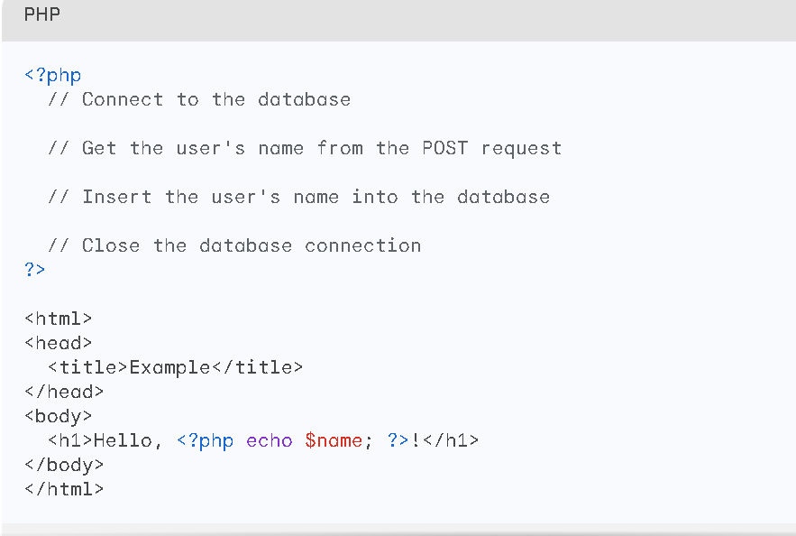
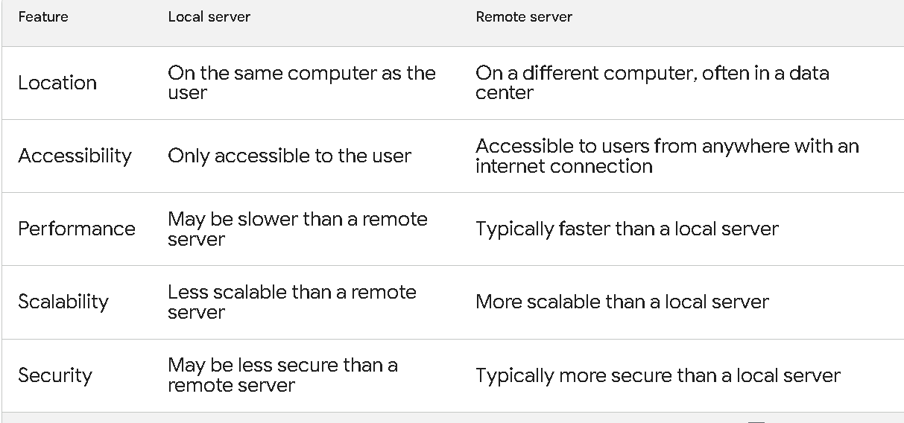
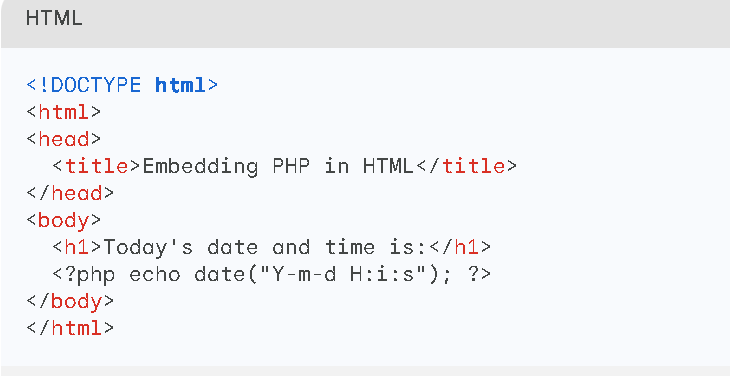

Introduction to web applications
Web applications are software programs that are accessed and used over the internet. They are typically hosted on a remote server and accessed by users through a web browser. Web applications can be used for a variety of purposes, such as online shopping, banking, social networking, and gaming.
Examples of Web Applications
- Online shopping websites such as Amazon and eBay
- Banking websites such as Chase and Bank of America
- Social networking websites such as Facebook and Twitter
- Gaming websites such as Steam and Epic Games Store
- How Web Applications Work
Web applications typically work by using a combination of web development technologies, such as HTML, CSS, JavaScript, and server-side programming languages such as PHP, Python, and Java.
Here is a simplified example of how a web application works:
- A user opens a web browser and enters the URL of the web application.
- The web browser sends a request to the web server hosting the web application.
- The web server processes the request and generates a response.
- The web server sends the response back to the web browser.
- The web browser displays the response to the user.
Advantages of Web Applications
- Accessibility: Web applications can be accessed from anywhere with an internet connection.
- Scalability: Web applications can be easily scaled up or down to meet the needs of a large number of users.
- Maintainability: Web applications are typically easier to maintain than desktop applications.
Client Side Scripting Vs Server Side Scripting
Client-side scripting is code that runs in the user's browser, while server-side scripting is code that runs on the web server.
Here is a short explanation of the difference between client-side and server-side scripting:
Client-side scripting:
- Runs in the user's browser
- Is used to add interactivity to web pages
- Examples: JavaScript, HTML, CSS
- for example:
 In this example, the validateForm() function is a client-side JavaScript function that validates the form before it is submitted to the server. If the form is not valid, the validateForm() function will return false and the form will not be submitted.
In this example, the validateForm() function is a client-side JavaScript function that validates the form before it is submitted to the server. If the form is not valid, the validateForm() function will return false and the form will not be submitted.
Server-side scripting:
- Runs on the web server
- Is used to generate dynamic web pages, process user requests, and access databases
- Examples: PHP, Python, Ruby, Java
- for example:

In this example, the PHP code connects to the database, gets the user's name from the POST request, inserts the user's name into the database, and then closes the database connection. The PHP code also generates the dynamic content Hello, <?php echo $name; ?>! which is displayed on the web page.
Understanding Web Servers
Web servers are software programs that deliver web pages to users. They are responsible for receiving HTTP requests from clients (web browsers) and sending back HTTP responses that contain the requested web pages. Web servers are typically installed on high-performance computers that are connected to the internet. They are designed to handle a large number of concurrent requests from users. Web servers play a vital role in the World Wide Web. They are essential for delivering the web pages that we view in our web browsers.
Here is a simplified explanation of how a web server works:
- A user opens a web browser and enters the URL of a website.
- The web browser sends an HTTP request to the web server that hosts the website.
- The web server receives the HTTP request and processes it.
- The web server retrieves the requested web page from its disk storage.
- The web server generates an HTTP response that contains the web page.
- The web server sends the HTTP response back to the web browser.
- The web browser receives the HTTP response and displays the web page to the user.
Local Servers and Remote Servers
Local servers are servers that are hosted on the same computer that you are using. They are typically used for development and testing purposes.
Remote servers are servers that are hosted on a different computer, often in a data center. They are typically used for production websites and applications.

Installing XAMPP and
configuring PHP environment
To install XAMPP and configure the PHP environment, follow these steps:
- Download the XAMPP installer from the official website.
- Run the installer and follow the on-screen instructions.
- Once the installation is complete, launch the XAMPP Control Panel.
- Click the "Start" button next to the "Apache" and "MySQL" modules.
- To verify that XAMPP is running correctly, open a web browser and navigate to http://localhost.
- You should see a page that says "XAMPP is now installed successfully!"
To configure the PHP environment, open the php.ini file in a text editor. The php.ini file is typically located in the xampp/php directory.
In the php.ini file, find the following lines:
display_errors = On
error_reporting = E_ALL
Uncomment these lines by removing the ; characters at the beginning of each line. Save the php.ini file and restart the Apache module.
To verify that the PHP environment is configured correctly, create a new file called info.php in the xampp/htdocs directory. Add the following code to the info.php file:
PHP
<?php
phpinfo();
?>
Open a web browser and navigate to http://localhost/info.php. You should see a page that contains information about your PHP environment.
If you are using XAMPP to develop PHP applications, you may also want to install additional PHP modules. To do this, open the XAMPP Control Panel and click the "Install" button next to the desired PHP modules.
Once you have installed the desired PHP modules, restart the Apache module.
You are now ready to start developing PHP applications with XAMPP.
Static website Vs Dynamic website development
Static websites are websites that deliver the same content to all users. They are typically created using HTML, CSS, and JavaScript. Static websites are relatively easy to create and maintain, but they can be less interactive and engaging than dynamic websites.
Dynamic websites are websites that can deliver different content to different users depending on a variety of factors, such as the user's location, time of day, or preferences. Dynamic websites are typically created using server-side scripting languages such as PHP, Python, and Ruby. Dynamic websites can be more interactive and engaging than static websites, but they can also be more complex to create and maintain.
Embedding
PHP code in Web Pages
To embed PHP code in web pages, you can use the following steps:
- Create a PHP file with the extension .php.
- Add your PHP code to the file.
- Save the file.
- Open a web browser and navigate to the PHP file.
The PHP code will be executed and the output will be displayed in the web browser.
Sample code:
<?php
echo "Hello, world!";
?>
When you save this file as hello.php and open it in a web browser, you will see the following output:
Hello, world!
You can also embed PHP code directly into HTML pages using the following syntax:
PHP
<?php code goes here ?>
For example, the following code will display the current date and time:

You can use PHP code to do a variety of things in your web pages, such as:
- Display dynamic content
- Process user input
- Connect to databases
- Send and receive emails
Embedding PHP code in web pages is a powerful way to create interactive and dynamic websites.
Here are some additional tips for embedding PHP code in web pages:
- Use comments to document your code. This will make your code more readable and easier to maintain.
- Use error handling to catch and handle errors in your code. This will help to prevent your website from crashing.
- Use security best practices to protect your website from attacks. For example, you should never directly expose database credentials in your PHP code.